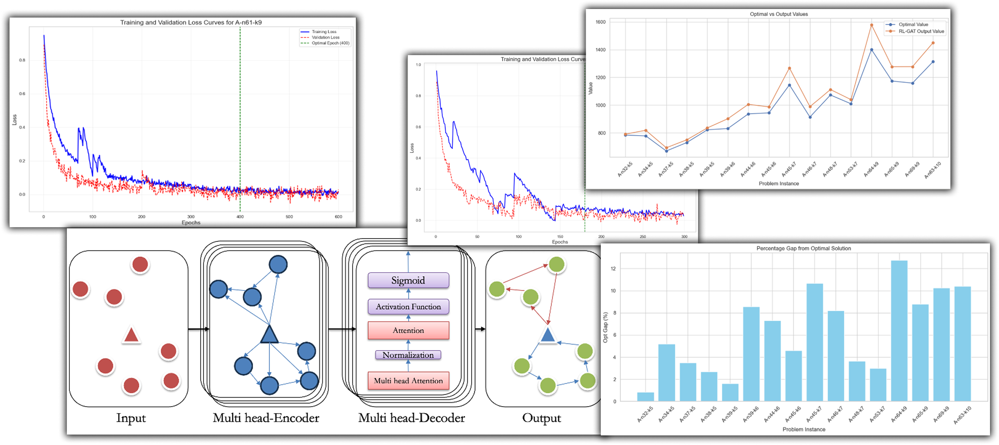

Nice, right?

Seminar Attendance Management App (Flutter)
Key Technologies: Flutter, Firebase, Real-Time Validation, AI (planned)
- Designed and developed a comprehensive Flutter application for managing university seminar attendance, allowing students to easily register and securely mark their presence using an event-specific 6-digit code generated and distributed on the seminar day.
- Implemented robust real-time validation that cross-checks location, date, time, and seminar access code at check-in, ensuring only authentic attendance is recorded and preventing fraudulent entries.
- Automated attendance tracking and certificate eligibility workflows, streamlining processes for both students and administrators to enhance efficiency and user experience.
- Planned future enhancement: Integration of AI-driven GPS anomaly detection to identify suspicious location data—such as spoofed coordinates or sudden, unrealistic jumps—by leveraging machine learning models (such as LSTM autoencoders) to ensure even greater authenticity and security of attendance records.

Graduate Researcher, Master's Thesis
- Designed and implemented an innovative model that leverages Reinforcement Learning (RL) and Graph Attention Networks (GAT) to address periodic vehicle routing and dynamic load balancing challenges.
- Trained a GAT model on a large-scale Periodic Vehicle Routing Problem (PVRP) dataset, utilizing node embeddings and multi-head attention to effectively represent customer demands, depot locations, and network context. Applied dynamic decoding to generate high-quality route predictions.
- Enhanced RL agent performance using policy-gradient optimization, yielding a 62% improvement in routing efficiency while significantly reducing computation time compared to traditional Operations Research (OR) solvers and Deep Q-Networks (DQNs).
- Collaborated with Linde Inc. to deploy routing optimization strategies, resulting in a 10% increase in operational efficiency and a measurable reduction in overall logistics costs.